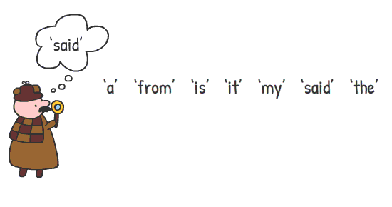
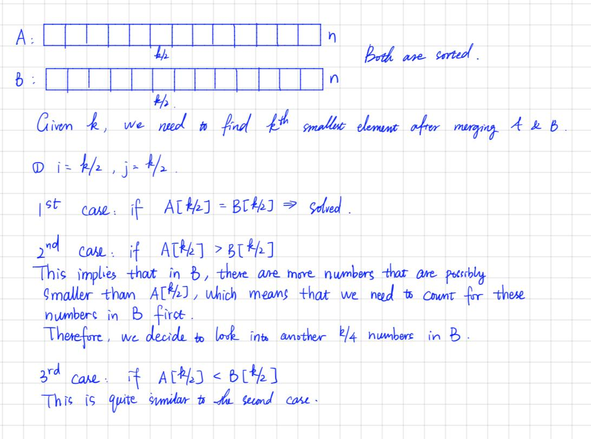

What is Binary Search?
Search a sorted array by repeatedly dividing the search interval in half.
Begin with an interval covering the whole
array. If the value of the search key is less than the item in the middle of the interval, narrow
the interval to the
lower half. Otherwise, narrow it to the upper half. Repeatedly check until the value is found or the
interval is empty.

We basically ignore half of the elements just after one comparison.
1.Compare x with the middle element.
2.If x matches with the middle element, we return the mid index.
3.Else If x is greater than the mid element, then x can only lie in the right half subarray after
the mid element.So we
recur for the right half.
4.Else (x is smaller) recur for the left half.
Kth Smallest Element in a sorted array formed by reversing
subarrays from a random index
Given a sorted array arr[] of size N and an integer K, the task is to find Kth
smallest element present in the array.
The given array has been obtained by reversing subarrays {arr[0], arr[R]} and {arr[R + 1], arr[N –
1]} at some random
index R. If the key is not present in the array, print -1.
Input: arr[] = { 4, 3, 2, 1, 8, 7, 6, 5 }, K = 2
Output: 2
Input: arr[] = { 10, 8, 6, 5, 2, 1, 13, 12 }, K = 3
Output: 5
Naive Approach: The simplest approach to solve the problem is to sort the given array
arr[] in increasing order and
print the Kth smallest element in the array.
Explanation: Sorted form of the array arr[] is { 1, 2, 3, 4, 5, 6, 7, 8 }.
Therefore, the 2nd smallest element in the array arr[] is 2.
Approach:

The simplest approach to solve the problem is to sort the given array arr[] in
increasing order and print the Kth
smallest element in the array.
here.
Now the question arises how do we optimise this?
Efficient Approach: The optimal idea is based on the observation that the Rth element is
the smallest element because
the elements in the range [1, R] are reversed. Now, if the random index is R, it means subarray [1,
R] and [R + 1, N]
are sorted in decreasing order. Therefore, the task reduceS to finding the value of R which can be
obtained using binary
search. Finally, print the Kth smallest element
Below is the implementation of the above approach:

Solution Code:
Count triplets from an array such that a[j] – a[i] ≤ a[k] –
a[j] ≤ 2 * (a[j] – a[i])
Given an array arr[] of size N, consisting of distinct elements, the task is to count the number
triplets such that
(arr[j] – arr[i]) ≤ (arr[k] – arr[j]) ≤ 2 * (arr[j] – arr[i]) and arr[i] < arr[j] < arr[k] (1 ≤ i,
j, k ≤ N and each of them should be distinct).
Efficient Approach: The above approach can be optimized by Binary Search. Follow the steps
below to solve the problem:
1. Sort the array arr[]
2. Iterate over the range [1, N] using a variable i and perform the following
steps:
3. Iterate in the range [i+1, N] using the variable j and perform the following
steps:
4. Initialize X as arr[j] – arr[i]
5. Find the lower bound of arr[j]+X using lower_bound and store its index in the
variable l.
6. Similarly, find the upper bound of arr[j] + 2×X using the default function
upper_bound and store its index in the variable r.
7. Initialize X as arr[j] – arr[i].
8. Add r-l to the variable ans..
Below is the implementation of the above approach:
Now that we have our recurrence ready, let's write the C++ code for the same.
Check Out this problem from below link now
Click here
🎉 Congratulations you have learnt to write your
first Binary Search code! 🎉
Hope you learnt something new from this article and could understand
all of the content given in it.